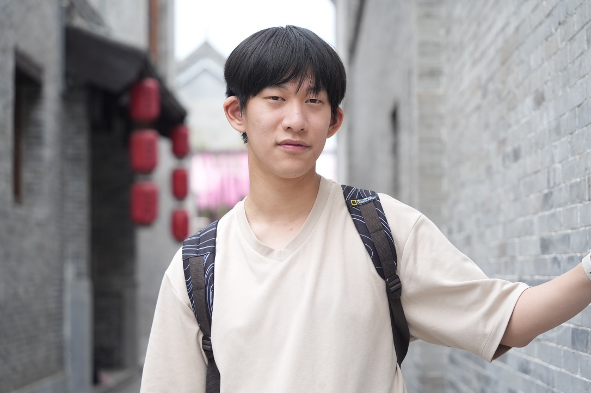
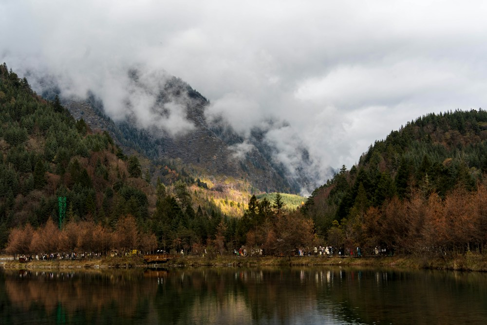
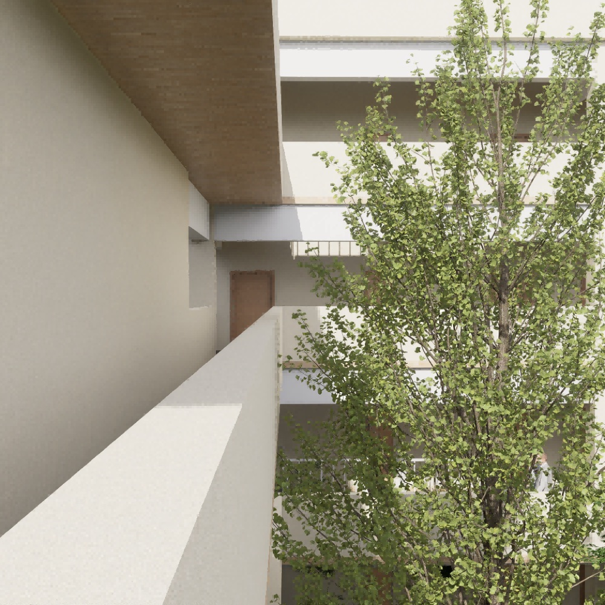

INTERACTION DESIGN / ARCHITECTURE / PHOTOGRAPHY
I’m Jerry Shen. I shape spaces and collect perspectives.
Exploring interaction design through a background in architecture, with a focus on people and their experiences.
Explore my work →
PER ASPERA AD ASTRA.PORTFOLIO — 2026
01
Selected worlds
A FEW WAYS OF SEEING01 / INTERACTION DESIGN

Interaction Design
Interaction & user experience
02 / ARCHITECTURE
Architecture
Architecture & spatial design
03 / PHOTOGRAPHYPhotography
Light, places & passing moments
Exploring interactions, spaces and perspectives.
View the architecture archive →